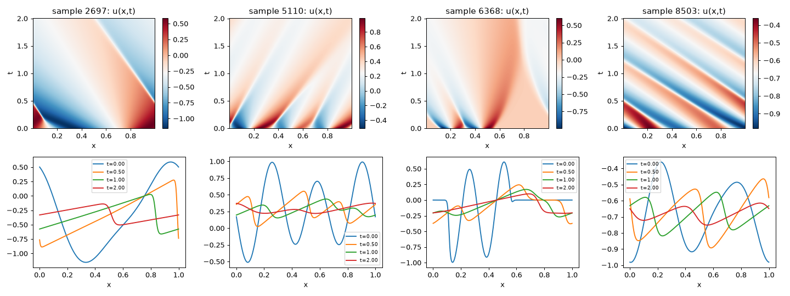
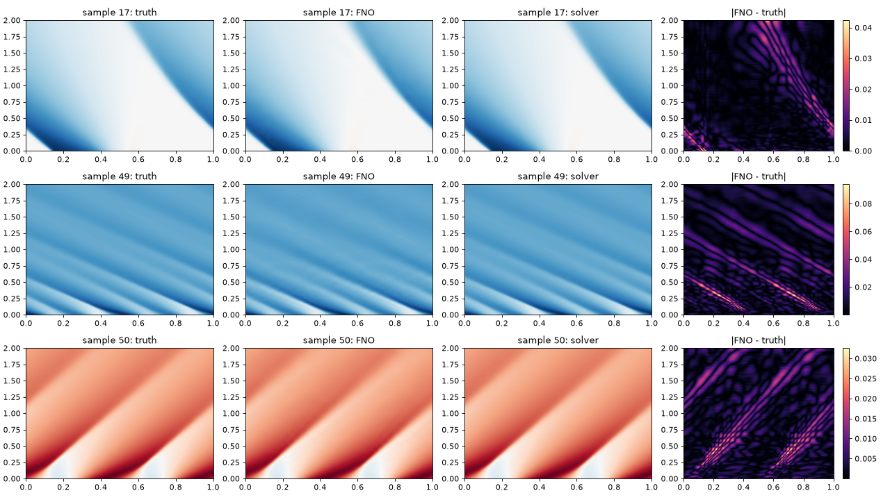

A plain-English tour of everything done so far on the burgers-fno-service project (QUEST Lab application), with the what, why, when and how of each step, plus a "like you're 8" box for each one. Written 9 Nov 2026, about 8 hours into the 72-hour clock (started 15:03 IST). Every number below was read from this project's own logs and reports. The web app itself is not built yet; that is the next stage.
What: The 1D Burgers equation describes a quantity u (think: speed of cars along a road) that moves along and gets squished into sharp fronts called shocks, while a little friction (viscosity) smooths them. We use viscosity setting ν = 0.01, on a ring-shaped road of length 1 (when you leave one edge you re-enter at the other), for time 0 to 2.
Why this one: It is the classic test: simple to state, but shocks make it hard for neural networks.
How we found the exact form: the dataset's friction term is ν/π, not ν. We proved it by running our own solver four ways and seeing which one matched the stored answers (the right one was off by about 0.2%; the others were off by 7% to 68%).
1D_Burgers_Sols_Nu0.01.hdf5: 10,000 simulations, each 201 snapshots × 1024 points. 8,232,968,312 bytes (8.23 GB). Licence CC BY 4.0.e6d9a4f6…2770).Shape (10000, 201, 1024), 32-bit numbers, no missing values (NaN count 0), values between −3.35 and 3.41. Starting waves are random sums of sine shapes, some squashed flat, so some are smooth and some are bumpy.

What: 10,000 simulations → 4,000 for training, 500 for validation (to choose settings), 1,000 for the final test. We also reduced each snapshot to 256 points (every 4th point) to fit the computer comfortably.
Why: If you grade a student on the questions they practised, the grade is meaningless. The test set stays sealed until the models are frozen. We split by whole simulation with a fixed random seed (0), so nothing leaks, and a test checks that no simulation appears in two sets.
Leakage check: 0 of 1,000 test starting waves were within 0.1% of any training one (closest: 2.4% apart).
What and why: Before trusting a fancy model, see how well a silly guesser does. If our model can't beat them, it is worthless. They were run on validation data first.
| Guesser | Validation error | Test error |
|---|---|---|
| "Nothing changes" (copy the start) | 1.220 | 1.158 |
| "Everything flattens to the average" | 0.477 | 0.456 |
Error = relative L2: 0 is perfect, 1 means "as wrong as the answer is big". "Nothing changes" is worse than guessing zero, because waves really do move.
What: A short program (src/solver.py, about 50 lines) that solves Burgers step by step the "textbook" way (finite volumes, so the total amount of "stuff" is conserved to round-off).
Why: (a) an independent check that we understand the equation, (b) the "trusted answer" the web app will show next to the neural network's, (c) a way to test inputs the dataset doesn't contain.
How good: Started from the dataset's starting waves, it reproduced the stored answers to 0.02% to 0.05% error on three validation cases. Its "stuff conservation" drift was about 1e-13, versus up to 6e-5 in the dataset itself.
What: A Fourier Neural Operator takes the starting wave and outputs the whole evolution in one go. We wrote it ourselves: a lift layer, four "Fourier layers", and a small output head. 837,513 learnable numbers. The competitor, a small U-Net (a standard image-style network), has 1,067,241.
Why an FNO: Instead of looking at pixels, it looks at the wave's frequencies (using the Fast Fourier Transform) and learns how each frequency changes. That is a natural fit for waves on a ring.
Why a U-Net too: To tell whether the FNO is actually good, not just "good for a neural net".
What and when: Gate (b) approved at 20:07. Six runs (FNO and U-Net, 3 random seeds each), 300 rounds each over the 4,000 practice simulations, finished 21:10 with no failures. FNO took about 7 minutes per run (about 1.4 s per round), U-Net about 13.5 minutes. Memory on the graphics card: about 1.0 GB.
How: The model guesses, we measure how wrong (relative L2), and an optimiser (Adam) nudges the 837,513 numbers to be less wrong. Each round saves a checkpoint, so a crash would resume instead of restart. We pick the best round by validation error only. The training code never loads the test set.
A smoke test came first (tiny data, 15 rounds, clearly labelled "not a trained model") to check the code runs, memory fits, loss falls, and resuming works.
| Model | Error (mean of 1,000) | Middle sample | Worst 5% |
|---|---|---|---|
| Copy the start | 1.158 | 1.033 | 2.617 |
| Flat average | 0.456 | 0.382 | 0.985 |
| U-Net (3 seeds) | 0.0904 ± 0.0053 | 0.063–0.073 | 0.25–0.29 |
| FNO (3 seeds) | 0.0267 ± 0.0004 | about 0.021 | about 0.065 |
The FNO is about 3.4× more accurate than the U-Net, and the three FNO seeds differ by only 0.0004, so this is not luck. Validation gave the same picture (FNO 0.0277–0.0283), which suggests we did not fool ourselves while choosing settings.
| FNO (test) | Error |
|---|---|
| Early (t = 0.01) | 0.014 |
| t = 0.5 | 0.026 |
| t = 1.0 | 0.027 |
| t = 2.0 (end) | 0.039 |
| Right next to a shock | 0.134 |
| Away from shocks | 0.042 |
"Near a shock" = true slope steeper than −20, plus or minus 5 grid points (about 2% of all points). I picked that rule myself and did not tune it.

You asked for test cases. All run on validation data or made-up inputs, never the test set.
| Check | Result | Verdict |
|---|---|---|
| Re-compute the score independently in 64-bit numpy | 0.027654 both ways | pass |
| Do saved arrays match the raw file rows they claim to? | exact (train, val, test samples) | pass |
| Does it use its input? (feed the wrong wave) | error 1.92 (vs 0.028) | pass |
| Tiny noise (1%) in the input | output changes 0.24% | stable |
| Is time lined up? (shift the answer by ±1, ±2 frames) | best at 0, worse either side | pass |
| Slide the starting wave around the ring | error identical (0.0275) for all shifts | pass |
| Feed it 512 points instead of 256 | FNO 0.0271 (U-Net: 0.56) | FNO fine |
| Smooth bump (not in training) | FNO 0.017 | fine |
| Square wave (sudden jump) | FNO 0.110 | 4× worse |
| Waves 2× / 3× taller than ever seen | FNO 0.100 / 0.195 | degrades |
| Random noise as starting wave | FNO 0.708 | fails |
| Very wiggly waves (40 or 100 wiggles) | FNO about 1.5 | fails badly |
| Does it conserve total "stuff"? | drifts about 7.9e-3 vs 7.9e-5 in the real data | no (100× more drift) |
The "out-of-distribution" rows are why the web app must show a warning for tall, noisy or very wiggly inputs. The model hasn't seen them and its answer would be wrong without looking wrong.
| Measurement | Result |
|---|---|
| FNO, one input, CPU, 1 or 2 threads | 1.8 ms typical (p95 2.1 ms) |
| FNO, 8 inputs together, CPU, 2 threads | 4.5 ms |
| Same, GPU, one input | 4.2 ms (the GPU is not faster for single inputs) |
| Our numpy solver, one input | about 380 ms |
| Loading torch library | about 1.5 s (once) |
| Memory after loading (this big CUDA build of torch) | about 530 MB, peak about 565 MB |
Careful: the FNO is about 200× faster than our simple solver here, but the solver isn't optimised and this laptop is far faster than a free cloud host (about 2 slow CPUs). Using all 14 threads made it slower (3.0 ms vs 1.8 ms), so the server will limit threads. The real latency number comes from the live deployment, not from here.
D:\Projects, the parent of all your other projects. A push would have uploaded everything. I reverted my changes to it and made a separate repo in Pre-doc. That parent repo was already damaged ("bad tree object HEAD"); I left it alone.reports/published_comparison.md.| Milestone | Due (IST) | State |
|---|---|---|
| M0 environment | 9 Nov 21:03 | done 18:52 |
| M1 data and split | 10 Nov 05:03 | done 20:07 |
| M2 models and evaluation | 10 Nov 21:03 | done 21:13 |
| M3 backend (local only) | 11 Nov 05:03 | done 23:09 (tested locally; not deployed) |
| M4 live skeleton | 11 Nov 11:03 | blocked: Hugging Face now charges for Docker Spaces (HTTP 402) |
| M5 front end | 11 Nov 21:03 | built and tested locally (10 Nov); not deployed |
| M6 final commit | 12 Nov 09:03 | not started |